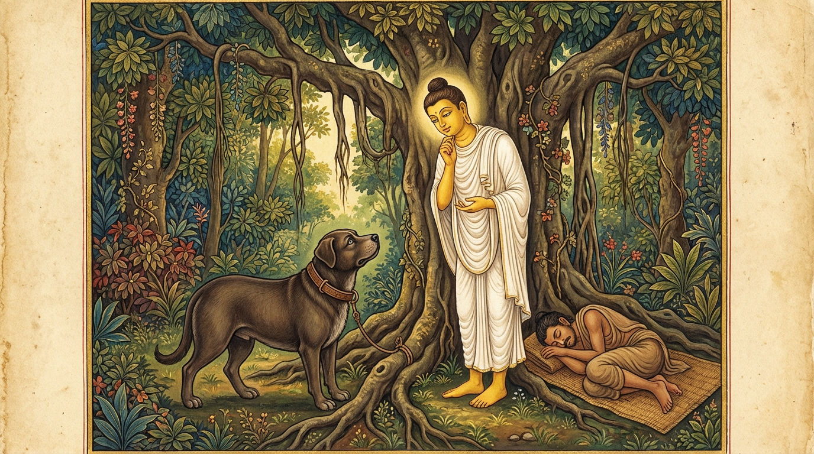

2. සුනඛ ජාතකය (242)
“බාලො වතායං සුනඛො” (මේ සුනඛයා ඒකාන්තයෙන්ම මෝඩය) යන මේ ගාථාව ශාස්තෲන් වහන්සේ ජේතවනාරාමයෙහි වැඩවසන සමයෙහි, අම්බල කොට්ඨක නම් ආසන ශාලාව අසල බත් කමින් සිටි බල්ලෙකු අරබයා දේශනා කළ සේක. ඒ බලුපැටියා උපන් කාලයේ සිට ආසන ශාලාවට පැන් ගෙනයන්නෝ ඌව ගෙනවිත් එහි පෝෂණය කළහ. පසුව ඌ එහි බත් කමින් මහත් ශරීර ඇත්තෙකු විය. ඉක්බිති එක් දිනක් එක්තරා ගම්වැසි පුරුෂයෙක් ඒ ස්ථානයට පැමිණ, සුනඛයා දැක, පැන් ගෙන එන්නන්ට උතුරු සළුවක් හා කහවණුවක් දී, හම්පටියකින් බැඳ ඌ රැගෙන ගියේය. ඌව ගෙන යද්දී හෙතෙම නොබිරුවේය; දෙන දෙන දේ කමින් ඔහු පසුපසම ගියේය. එවිට ඒ පුරුෂයා “මේ බල්ලා දැන් මට ආදරය කරයි” යැයි සිතා හම්පටිය මුදාහළේය. හම්පටිය මුදාහළ මොහොතෙහිම ඒ සුනඛයා එක පිම්මේ ආසන ශාලාවටම දිව ගියේය. භික්ෂූන් වහන්සේලා ඒ දැක, ඌ කළ දේ වටහාගෙන සවස් කාලයේ දම්සභාවෙහිදී “ඇවැත්නි! ආසන ශාලාවෙහි සිටි බල්ලා බැම්මෙන් මිදීමට දක්ෂයෙක් වී, මුදාහළ මොහොතෙහිම නැවත පැමිණියේය” යැයි කථාවක් ඉපදවූහ. ශාස්තෲන් වහන්සේ එහි පැමිණ “මහණෙනි! දැන් කවර කථාවකින් යුතුව සිටියාහුදැයි” විචාරා, “මෙනම් කථාවෙන්” යයි කී කල්හි, “මහණෙනි! ඒ සුනඛයා බන්ධනයෙන් මිදීමට දක්ෂ වූයේ දැන් පමණක් නොවේ; පෙරත් දක්ෂයෙක් විය” යයි වදාරා අතීත කථාව ගෙනහැර දැක්වූ සේක.
අතීතයෙහි බරණැස් නුවර බ්රහ්මදත්ත රජු රජ කරන කල්හි බෝසතාණන් වහන්සේ කාසි රට එක්තරා මහා සම්පත් ඇති කුලයක ඉපිද, වැඩිවියට පත්ව ගෘහවාසය කළහ. එකල බරණැස් නුවර එක්තරා මිනිසෙකුට බල්ලෙක් සිටියේය. ඒ සුනඛයා බත්පිඩු ලබමින් මහත් සිරුර ඇත්තෙකු විය. ඉක්බිති එක් ගම්වැසියෙක් බරණැසට පැමිණ ඒ සුනඛයා දැක, අයිතිකරුට උතුරු සළුවක් හා කහවණුවක් දී බල්ලා ලබාගෙන, හම්පටියකින් ඌ බැඳගෙන, පටි කෙළවර අල්ලාගෙන යන්නේ, වනාන්තරයට ඇතුල්වන තැනදී එක් ශාලාවකට පිවිස, සුනඛයා බැඳ ලෑල්ලක වැතිරී නිදා ගත්තේය. එකල බෝසතාණන් වහන්සේ කිසියම් කටයුත්තක් සඳහා වනාන්තරයට යමින් සිටියදී හම්පටින් බැඳ සිටි ඒ බල්ලා දැක පළමු වන ගාථාව කීහ.
“වරපට (හම්පටිය) නොකන මේ සුනඛයා ඒකාන්තයෙන්ම මෝඩයෙකි. (එය කා දමා) බැම්මෙන් මිදුනේ නම්, බත් කා සතුටින් (තම) ගෙදරට යන්නේය.”

එහි පමුඤ්චෙය්ය යනු මුදා හරින්නේය (ගැලවෙන්නේය) යන්නයි. මෙයම පාඨයයි. අසිතො ච ඝරං වජෙ යනු ආහාර අනුභව කොට තෘප්තියට පත්ව, හොඳින් හිත ඇතිව තමන්ගේ වාසස්ථානයට යන්නේය යන්නයි.
එය අසා සුනඛයා දෙවන ගාථාව කීවේය:
“තොප කියන දේ මා විසින් දැඩිව සිතට ගන්නා ලදී. මගේ සිතෙහිද ඒ අදහස ඇත. මා විසින් මගේ ද ඔබේද අදහස හදවතෙහි තැන්පත් කරන ලදී. පලා යන්නට නිසි කල් උදාවන තුරු මම බලා සිටිමි. මේ ජනතාව නින්දට යන තුරු සිටිමි.”
එහි අට්ඨිතං මෙ මනස්මිං මෙ යනු තෙපි කියන දෙය මා විසින් දැඩි ලෙස සිතට ගන්නා ලද්දේමය; මගේ සිතෙහි ද ඒ අදහසම ඇත්තේය. අථො මෙ හදයෙ කතං යනු ඉක්බිති මාගේද තොපගේද වචනය හදවතෙහි තැන්පත් කරන ලද්දේමය. කාලඤ්ච පටිකඞ්ඛාමී යනු සුදුසු කාලය උදාවනතුරු බලා සිටිමි. යාව පස්සුපතූ ජනො යනු මේ මහජනයා නින්දට වැටෙන තුරු මම බලාපොරොත්තුවෙන් සිටිමි. එසේ නොමැතිව (දැන්ම ගියොත්) “මේ බල්ලා පලායති”යි ඝෝෂාවක් උපදිනු ඇත. එබැවින් රාත්රී භාගයෙහි සියලුදෙනාම නිදිගත් කල්හි හම්පටිය කා පලා යන්නෙමියි කීහ. ඌ මෙසේ කියා මහජනයා නිදිගත් කල්හි හම්පටිය කා, (ආහාරයෙන්) සතුප්පතියට පත්ව, පලා ගොස් තම ස්වාමියාගේ නිවසටම ගියේය.
බුදුරජාණන් වහන්සේ මේ ධර්ම දේශනාව ගෙනහැර දක්වා ජාතක කථාව නිමවා වදාළ සේක. “එකල සුනඛයා වූයේ දැන් මේ සුනඛයාමය. නුවණ ඇති පුරුෂයා වනාහි මම ම වූයෙමි” යි වදාළ සේක.
සුනඛ ජාතක වර්ණනාව දෙවැන්නයි.